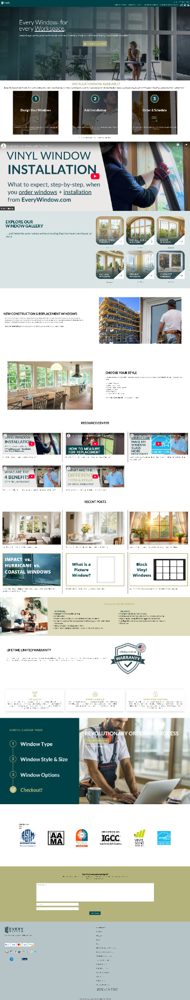
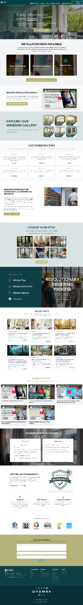
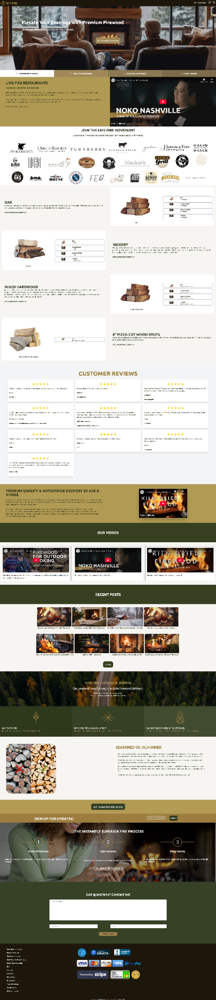
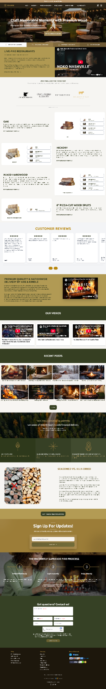
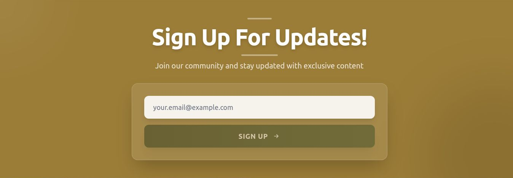

Installation explanation
The redesigned page pairs installation copy and a CTA with the video instead of using a full-width video block.
← Selected work / Website Design & Builds
I built NxtDib’s website from scratch and redesigned the Every Window and Axe & Kindle homepages. This selection pairs a complete website build with before-and-after examples of content hierarchy, visual presentation and customer actions.


Both homepages had to introduce the brand, explain the offer and help visitors choose their next step. Every Window combines window selection, installation information and buyer education. Axe & Kindle combines firewood shopping, live-fire cooking, delivery information and trust signals.
The earlier captures already contain substantial content. My redesign work focused on how that content is presented and organized.
I built nxtdib.com from scratch as part of my multi-brand marketing work. I also redesigned the Every Window and Axe & Kindle homepages; the supplied screenshots document changes to layout, content presentation, imagery and calls to action. My broader website work also includes redesigning levo.aero.
Every Window: reorganized the installation introduction, changed the installation video from a full-width block to a text-and-video section, brought customer reviews higher into the page, and turned the style section into a visual selection grid. The redesigned footer uses a stronger deep-teal treatment.
Axe & Kindle: refreshed the hero imagery and message while retaining the product-species sequence. The redesigned capture shows a horizontal review presentation, a dedicated signup panel, more compact contact fields and an organized footer.
The NxtDib deliverable was a website built from scratch. For Every Window and Axe & Kindle, the supplied before-and-after homepage screenshots document changes in layout, content hierarchy and visual presentation.
These captures do not establish a change in conversion rate, revenue, page speed, accessibility or user satisfaction. No performance improvement is claimed without a comparable measurement period.
Sources: my confirmed NxtDib website-build experience, plus the original and redesigned homepage captures supplied for Every Window and Axe & Kindle. The original screenshots describe the supplied versions; current-site detail captures are dated October 29, 2026. No responsive testing results are claimed.
Compare the original before-and-after screenshots, then explore a larger desktop detail from each current site. Open or download the unchanged PNG files to inspect the originals. The scroll areas also support keyboard navigation.
B2B wholesale beverage marketplace
I built nxtdib.com from scratch. This project demonstrates my website-building experience alongside the homepage redesigns below.
A more structured introduction to windows, installation and buyer education, using deep teal, cream and olive-gold accents.


The redesigned page pairs installation copy and a CTA with the video instead of using a full-width video block.
Customer reviews appear higher on the page, and the style section becomes a visual grid of window options.
Recent posts, educational videos and the benefits section receive more defined layouts; the footer adopts a cohesive deep-teal treatment.
The current style grid groups six window types with labeled imagery and a Start Designing action.

A refreshed premium-firewood homepage that retains the product sequence while updating the hero, reviews and lower-page actions.


A new outdoor fire scene and revised hero message present firewood through the experience it supports.
Oak, hickory, mixed hardwood and pizza-cut sections remain recognizable; the customer-review grid becomes a horizontal card presentation.
A dedicated gold signup section and compact contact form give these actions more distinct, organized spaces above the footer.
A separate gold section gives the email field and signup action a clear visual home.
